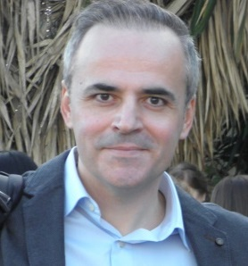

Seamless for IOT can be observable in terms of progress.
| Nationality | Address | Phone | ||
|---|---|---|---|---|
| Greek | 1 Hippocratous Str. Athens 11472 | nikos.doulaveras@gmail.com | +30 6947423178 | nikosdoulaveras |
IT and Privacy Project Consultant:
2018-06 - CurrentlyCommunication and Digital Marketing:
2010-11 - 2018-05Research Executive:
2007-07 - 2010-10Account Executive Advertising Projects:
2004-05 - 2016-12Computer Science:
2017Political Communication and New Technologies:
2003Communication and Mass Media:
2000• CMS development (Wordpress, Joomla)
• Arduino automation
• project management
• GDPR Certification DPO
• English, Advanced
• German, Advanced
-Present proposals that are actionable -Project management -GDPR readiness -Security as a priviledge -HCI advancements
| Accomplishments | Hobbies | Web Development |
|---|---|---|
| ERMIS AWARDS 2004 HEINEKEN | trekking | joomla |
| EFFIE 2005 | arduino | wp |
| 1rst Social Media Study IE | guitar | custom templates |